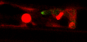
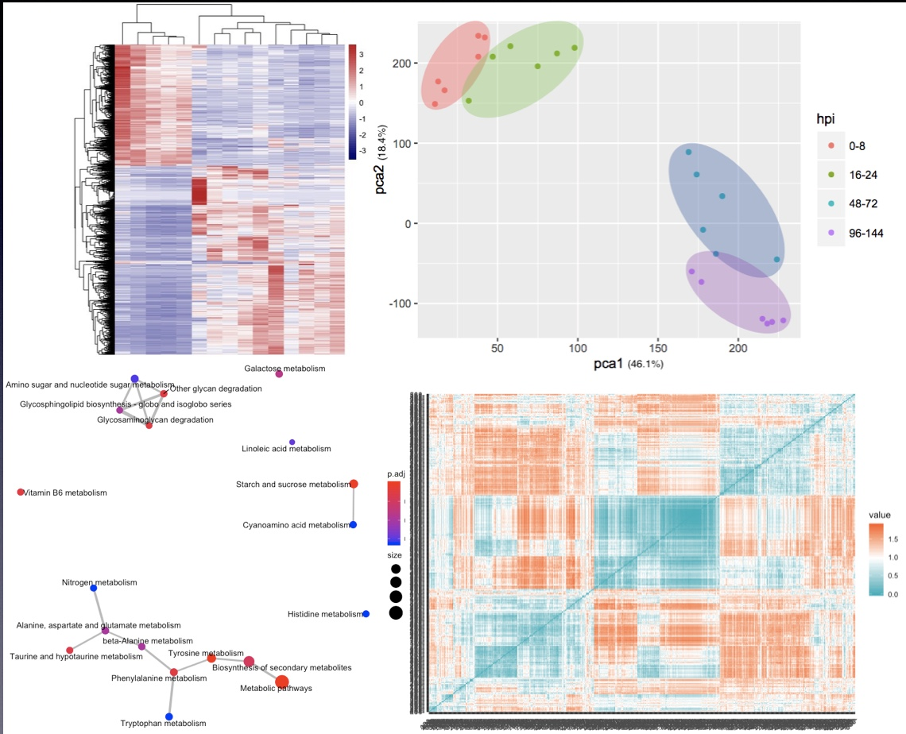
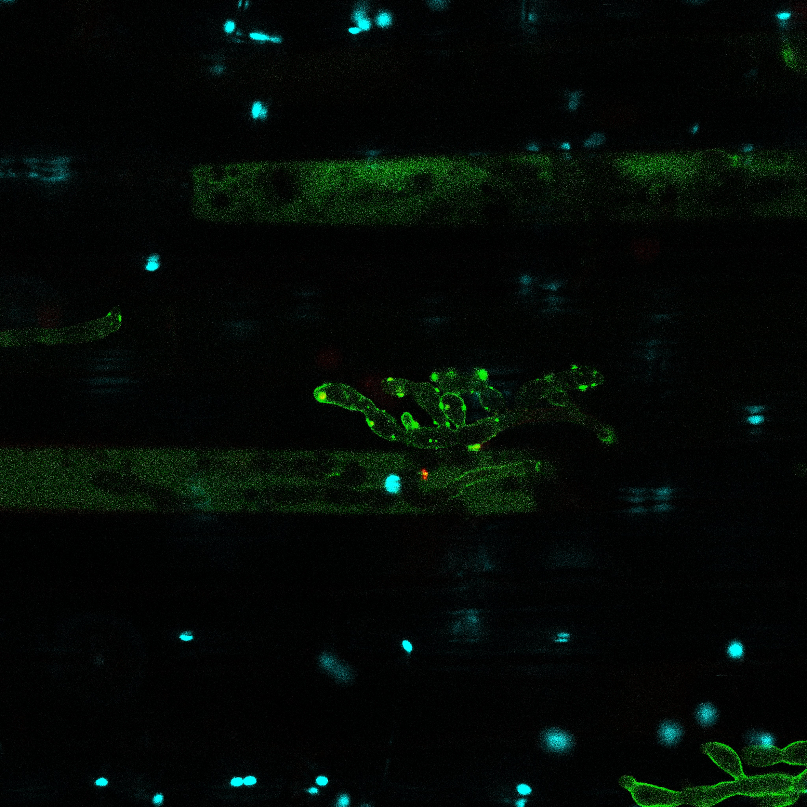

1. Molecular mechanisms of fungal infection and effector regulation

Plant pathogenic fungi deploy sophisticated infection programs to colonize host tissues. Our research focuses on understanding how fungal pathogens coordinate infection-related development and regulate the expression of effector proteins that manipulate host immunity. Using the rice blast fungus Magnaporthe oryzae as a model system, we combine genetics, functional genomics, and quantitative omics approaches to dissect the regulatory networks that control effector gene expression during plant infection. We are particularly interested in how pathogens dynamically remodel transcriptional programs during host invasion and how regulatory hubs integrate environmental signals to fine-tune virulence strategies. Understanding these mechanisms provides fundamental insights into host–pathogen co-evolution and reveals potential targets for disease control.
2. Spatial organization of plant immunity
Plant immune responses are traditionally studied at the level of whole tissues or organs. However, plants consist of diverse cell types that may play distinct roles in defense. Our lab aims to understand how immunity is spatially organized within plant tissues. By integrating single-cell transcriptomics, spatial genomics, and quantitative imaging, we investigate how immune signaling is distributed across different cell types and how intercellular communication coordinates defense responses during infection. Our goal is to uncover the spatial immune architecture of plants and determine how specific cellular neighborhoods contribute to effective resistance while minimizing growth penalties. These studies provide a new conceptual framework for understanding plant immunity at cellular resolution.

3. Plant immunity in a changing climate

Climate change is reshaping plant–pathogen interactions worldwide. Rising temperatures, altered rainfall patterns, and extreme weather events are expected to accelerate the emergence and spread of crop diseases, posing major challenges to global food security. Our research seeks to understand how environmental factors influence plant immune systems and pathogen virulence strategies. By combining molecular genetics, comparative genomics, and systems biology approaches, we aim to identify mechanisms that enable plants to maintain robust immunity under fluctuating environmental conditions. Ultimately, our work contributes to the development of climate-resilient crops and sustainable disease management strategies, supporting future agricultural systems in the face of global climate change.